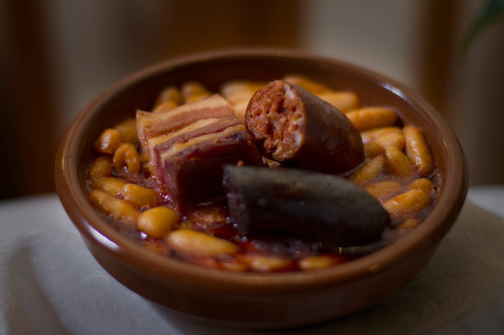
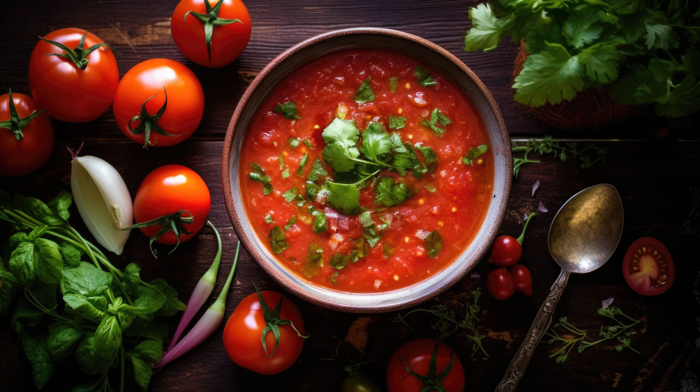
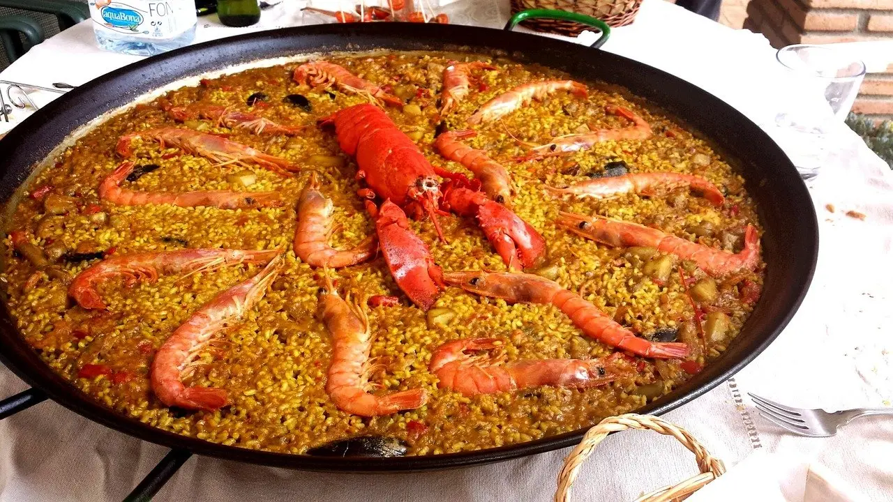
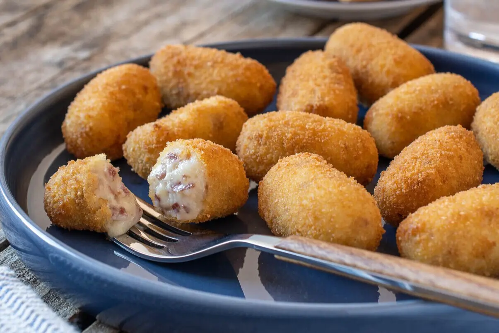

Esta emblemática tortilla española de patatas es una elección reconfortante para cualquier momento del día.

Esta clásica receta de fabada asturiana es la elección perfecta para un reconfortante almuerzo o cena en cualquier día de la semana.
Este refrescante gazpacho andaluz es una opción deliciosa para disfrutar en los días calurosos de verano.
Esta exquisita paella valenciana es un festín para los sentidos, perfecta para compartir con amigos y familia en una tarde soleada.
Estas deliciosas croquetas caseras son el complemento perfecto para cualquier comida o simplemente como un tentempié irresistible.
La tortilla francesa, aunque su nombre sugiere lo contrario, es un plato clásico de la cocina española.